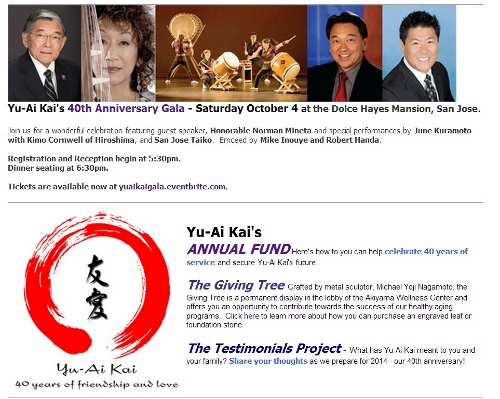

Sunday,
Feb 15, 2015
San Jose Buddhist Church Betsuin
640 N. Fifth Street, San Jose, CA
5:30-7:30pm
Event is
free and open to the public
"As
historical precedent it (the Korematsu decision)
stands as a constant caution that in times of war
or declared military necessity our institutions
must be vigilant in protecting constitutional
guarantees. It stands as a caution that in times
of distress the shield of military necessity and
national security must not be used to protect
governmental actions from close scrutiny and
accountability. It stands as a caution that in
times of international hostility and antagonisms
our institutions, legislative, executive and
judicial, must be prepared to exercise their
authority to protect all citizens from the petty
fears and prejudices that are so easily aroused."
- US District Court Judge Marilyn Hall Patel
In the days following the attack on Pearl Harbor, the
FBI rounded up thousands of Japanese immigrants who
were detained without charges. Then, on February 19, 1942
President Franklin D. Roosevelt signed Executive Order
9066, forcing 120,000 Japanese Americans into
concentration camps. The Commission on the Wartime
Relocation and Incarceration of Civilians concluded that
this action was a result of “race prejudice, war hysteria,
and a failure of political leadership.”
2015 is the
73rd anniversary of the signing of E.O. 9066 and this
Day of Remembrance will be
the 35th annual program in San Jose. We hope that you join
us on February 15th as we honor the memory of the
internees and renew our commitment to equality and justice
for all people.
Click
here to
download the Save the Date 2014 Day of Remembrance flyer.
News
Yu-Ai Kai Japanese
American Community Senior Service 40th Anniversary Gala
Saturday, October 4, 2014
NOC congratulates Yu-Ai Kai on their 40th anniversary!
Visit the Yu-Ai Kai
website for more information on the 40th Anniversary
Gala.

442 film project
Burt Takeuchi, an
independent filmmaker and former NOC chairperson, is currently
working on a film based on the exploits of the famed 442nd
Combat Regimental Team. The spec trailer for the film is
below:
The 442nd was a segregated Japanese
American regiment that fought in WW II. This unit is
recognized as the most decorated unit in the history of the US
Armed Forces for its size and length of service. This dramatic
film is a companion piece for the current documentary
“Valor With Honor”
currently being shown at select screenings.
The
completed film will be a powerful fictional story about this
legendary WW II infantry unit with intense battle scenes,
drama, and a touch of humor. This heroic story will be told
from the soldiers point of view with a balance of history and
dramatic action. The films main characters will be fully
developed from an ensemble cast.
The project is
inspired by films like The Seven Samurai, Saving Private Ryan,
and the HBO’s Band of Brothers. Burt is looking for donors to
help support and complete this film. You can be a part of this
film project by donating funds to help complete this important
story for future generations. Please contact Burt Takeuchi by
email for photos, links to trailers, and poster art. Burt Takeuchi PO Box
640831 San Jose, CA 95164 torasanfilms@yahoo.com